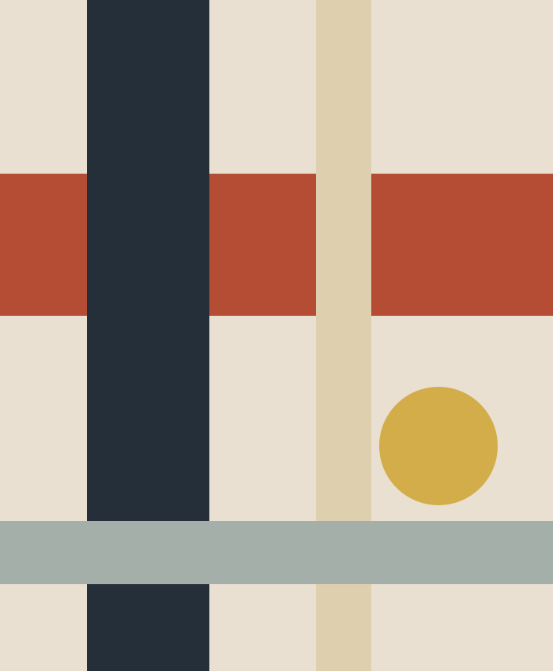
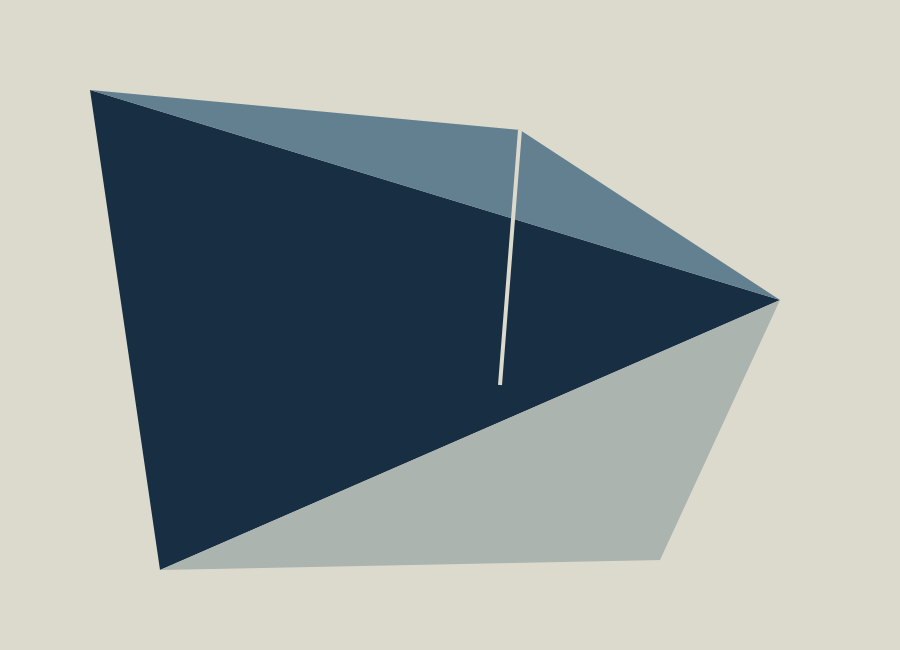
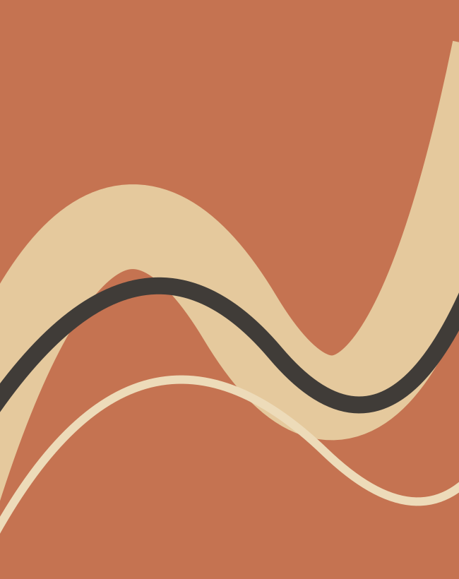

EXHIBITION 013 / ORIGINAL STUDIES
A room between things.
Three compositions about distance, interruption and the space we leave around a mark.

Original digital painting

Original digital painting

Original digital painting
Wall labels
Choose a work to read its wall note.
Look where the red band meets the dark verticals. The gap between them is the subject, not the empty space around it.
The blue planes share one sharp edge. Notice which plane turns away and which one stays put.
The ribbon keeps touching the edge of its field. It seems to move, yet the frame holds it still.
Route through the room
Nothing here asks you to hurry.
Each work begins with a simple relation: a line meeting a field, a plane folding away, a curve finding its edge. The wall lets these relations stand apart. Captions sit below the work, where they can be read after looking.
Read the notes for work 01 ↗Before you visit
This is a fictional exhibition. The works are original vector studies made for this reference; there is no real venue or booking service.
About viewing and artwork rights
All three studies are original MIT-licensed artwork. A real exhibition should provide the artist, title, date, medium, dimensions and reproduction permission for every work.